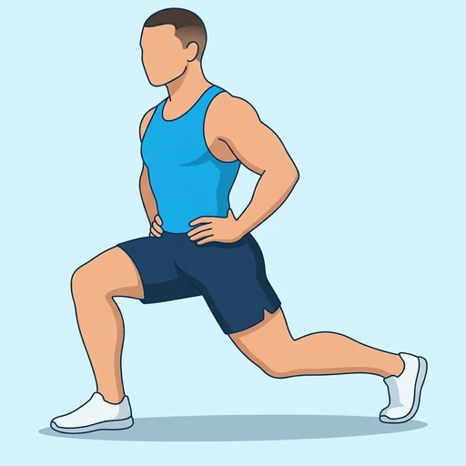

Isometric Split Squat
A held version of the split squat: you stand in a long lunge stance and stay in the bottom position with your front thigh near parallel to the floor. The continuous tension builds strength and control in the quadriceps and glutes of the front leg.
Upper legs · Bodyweight · Intermediate

Muscles worked by the Isometric Split Squat
Primary
Secondary
Also called: glute, glutes, gluteus maximus, buttocks, butt, quad.
Equipment
No equipment — this is a bodyweight exercise.
How to do the Isometric Split Squat
- Stand with one foot well forward and the other foot back, about a long stride apart, with your hands on your hips.
- Keep your torso upright and lower straight down by bending both knees.
- Lower until your front thigh is close to parallel with the floor and your back knee hovers just above the ground.
- Keep your front heel flat and your front knee tracking over your toes.
- Hold this position for the planned time, keeping your trunk tall and your weight spread through the front foot.
- Press up to the top, then repeat on the other leg.
Form tips
- Keep the back knee just off the floor so the front leg keeps working the whole time.
- Do not let the front knee cave inward; push it gently over the middle toes.
- Hold a lighter position higher up if the bottom is too intense; the quads should burn, not the knee joint.
At a glance
| Body part | Upper legs |
|---|---|
| Category | Strength |
| Force type | Static |
| Mechanic | Compound |
| Difficulty | Intermediate |
| Equipment | Bodyweight |
| Goals | Strength, Endurance |
| Tags | Leg day, Shoulder safe, Lower back safe, No axial load, Knee safe |
| MET | 6.0 (metabolic equivalent, for calorie estimates) |
| Unilateral | Yes |
| Bodyweight | Yes |
| Dataset id | isometric-split-squat |
Isometric Split Squat in German & Spanish
| German | Isometrische Split-Kniebeuge |
|---|---|
| Spanish | Sentadilla en Tijera Isométrica |
Descriptions, instructions and tips ship in all three languages in the JSON.
Related exercises
Exercise data (JSON)
The record below is exactly what exercises.json ships for this exercise — names, descriptions, instructions and tips in English, German and Spanish.
{
"id": "isometric-split-squat",
"name_en": "Isometric Split Squat",
"name_de": "Isometrische Split-Kniebeuge",
"name_es": "Sentadilla en Tijera Isométrica",
"description_en": "A held version of the split squat: you stand in a long lunge stance and stay in the bottom position with your front thigh near parallel to the floor. The continuous tension builds strength and control in the quadriceps and glutes of the front leg.",
"description_de": "Eine gehaltene Variante der Split-Kniebeuge: Du stehst in einer langen Ausfallschrittstellung und bleibst in der unteren Position, den vorderen Oberschenkel nahe der Parallele zum Boden. Die dauerhafte Spannung baut Kraft und Kontrolle in Quadrizeps und Gesäßmuskeln des vorderen Beins auf.",
"description_es": "Una versión mantenida de la sentadilla en tijera: te colocas en una postura de zancada larga y te quedas en la posición baja con el muslo delantero casi paralelo al suelo. La tensión continua desarrolla fuerza y control en los cuádriceps y los glúteos de la pierna delantera.",
"category": "strength",
"force_type": "static",
"mechanic": "compound",
"difficulty": "intermediate",
"body_part": "upper_legs",
"primary_muscles": [
"gluteus_maximus",
"quadriceps"
],
"secondary_muscles": [
"adductors",
"gluteus_medius",
"hamstrings"
],
"goals": [
"strength",
"endurance"
],
"tags": [
"leg_day",
"shoulder_safe",
"lower_back_safe",
"no_axial_load",
"knee_safe"
],
"variation_group": "lunge",
"is_unilateral": true,
"is_bodyweight": true,
"instructions_en": [
"Stand with one foot well forward and the other foot back, about a long stride apart, with your hands on your hips.",
"Keep your torso upright and lower straight down by bending both knees.",
"Lower until your front thigh is close to parallel with the floor and your back knee hovers just above the ground.",
"Keep your front heel flat and your front knee tracking over your toes.",
"Hold this position for the planned time, keeping your trunk tall and your weight spread through the front foot.",
"Press up to the top, then repeat on the other leg."
],
"instructions_de": [
"Stelle dich mit einem Fuß weit vorn und dem anderen hinten, etwa eine lange Schrittlänge auseinander, die Hände an den Hüften.",
"Halte den Oberkörper aufrecht und gehe gerade nach unten, indem du beide Knie beugst.",
"Gehe nach unten, bis der vordere Oberschenkel fast parallel zum Boden ist und das hintere Knie knapp über dem Boden schwebt.",
"Halte die vordere Ferse flach am Boden und das vordere Knie über den Zehen.",
"Halte diese Position für die geplante Zeit, den Rumpf aufrecht und das Gewicht über den vorderen Fuß verteilt.",
"Drücke dich nach oben und wiederhole dann mit dem anderen Bein."
],
"instructions_es": [
"Ponte de pie con un pie bien adelantado y el otro atrás, separados aproximadamente una zancada larga, con las manos en las caderas.",
"Mantén el torso erguido y baja en línea recta flexionando ambas rodillas.",
"Baja hasta que el muslo delantero quede casi paralelo al suelo y la rodilla trasera flote justo por encima del suelo.",
"Mantén el talón delantero apoyado y la rodilla delantera en línea con las puntas de los pies.",
"Mantén esta posición durante el tiempo previsto, con el tronco erguido y el peso repartido por todo el pie delantero.",
"Sube hasta arriba y luego repite con la otra pierna."
],
"tips_en": [
"Keep the back knee just off the floor so the front leg keeps working the whole time.",
"Do not let the front knee cave inward; push it gently over the middle toes.",
"Hold a lighter position higher up if the bottom is too intense; the quads should burn, not the knee joint."
],
"tips_de": [
"Halte das hintere Knie knapp über dem Boden, damit das vordere Bein die ganze Zeit arbeitet.",
"Lass das vordere Knie nicht nach innen einknicken; drücke es sanft über die mittleren Zehen.",
"Halte eine höhere, leichtere Position, wenn die untere zu intensiv ist; die Oberschenkel sollen brennen, nicht das Kniegelenk."
],
"tips_es": [
"Mantén la rodilla trasera justo por encima del suelo para que la pierna delantera trabaje todo el tiempo.",
"No dejes que la rodilla delantera se hunda hacia dentro; empújala suavemente hacia los dedos del medio.",
"Mantén una posición más alta si la parte baja resulta demasiado intensa; deben arder los cuádriceps, no la articulación de la rodilla."
],
"met": 6.0,
"images": {
"flat": {
"main": "images/flat/isometric-split-squat-main.webp"
}
}
}Fetch just this exercise
const { exercises } = await fetch(
"https://exercise-dataset.com/exercises.json"
).then(r => r.json());
const ex = exercises.find(e => e.id === "isometric-split-squat");Free for personal and commercial in-app use with attribution (“Exercise data by RepDB”) — see the license and ready-made attribution snippets. Redistributing the data as a dataset or API is not permitted.